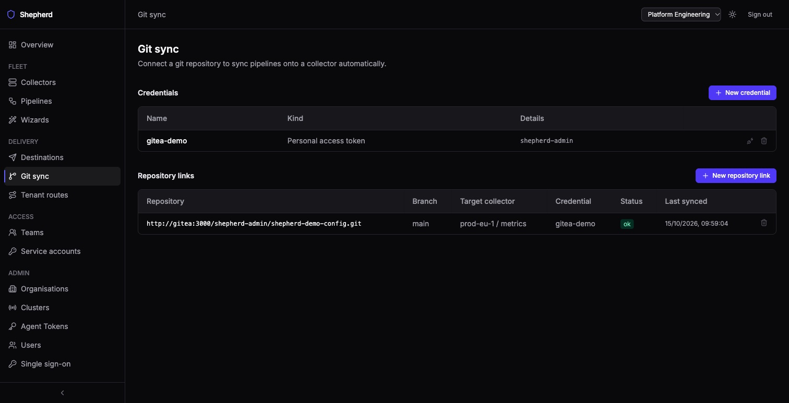

Instead of authoring in the UI, point Shepherd at a git repository and it will poll for
*.alloy files and sync them onto a target collector as pipelines. Any git server
works — the credential kinds are personal access token, basic auth, SSH deploy key, an Entra
service principal for Azure DevOps, GitHub App installation tokens, and none for a public
repository. Set it up under
Git sync in the sidebar: add a credential, then a repository link naming the
branch, the path and the collector its files are served to.
This page is about Shepherd’s own git sync, not about deploying Shepherd with
Argo CD or Flux. If you are looking for the latter, three values matter and each
has a default that is unsafe under a tool that renders the chart offline: see
cnpg.render,
externalSecrets.render, and the sandbox
token — the chart generates it at install and looks it up on upgrade, which an offline
render cannot do, so every sync would mint a new token and roll both Deployments. Set
simulator.token.value or simulator.token.existingSecret (or
simulator.enabled=false).

Synced pipelines show git in the Source column and are owned by the
repository: they are read-only in Shepherd — the editor will not save them and
they cannot be deleted. You can enable or disable one — that sticks — or restore an
earlier revision, but the next commit to the repository puts the repository’s text
back. A new file becomes an enabled pipeline on
its first successful sync. Synced files pass the same three-stage validation gate as
everything else, and a commit syncs whole or not at all: each file is checked on its own,
then the commit as one merged config for the link’s collector. If any file fails
— including a file whose signals the collector’s role does not allow —
nothing from the commit syncs, the collector keeps serving the previous commit, and the
failing files are named under the link’s status on the Git sync page; the next poll
tries the commit again. A pipeline that was already failing before the commit (one the
commit does not touch) does not block it: the commit syncs, and the link shows a warning
naming that pipeline. Fix it soon: until then the collector will likely reject its merged
config and keep running the previous one. Any synced pipeline can be read as a
graph.
Removed files. A file removed from the repository has its pipeline deleted
on the next successful sync; a renamed file is a removal of the old name and a new pipeline
under the new one, in the same sync. Each delete is recorded in the audit log as a
pipeline.delete by gitsync with the file and commit, and the
collector’s served config is recomputed right away. A sync that could not fetch the
repository, or in which any file failed, deletes nothing.
Mass deletes are held back. Two guards hold back the whole commit
— its deletes, new files and changes alike — and set the link’s status
to warning, with the reason (how many pipelines it would delete) under it:
a commit with no .alloy
files at all under the link’s path while the link still has pipelines (usually a
wrong path or branch), and a commit that would delete more than three pipelines and more
than half of what the link had at its last successful sync (a moved directory, or files
removed before upgrading to v0.18.0, the release that added this). A moved directory therefore
keeps serving its old pipelines rather than both copies. A link that has never completed
a sync may delete at most three pipelines per sync until it does. While a link shows the
warning, every poll clones the repository again. To apply such a commit,
delete and re-create the repository link; or restore some of the removed files, then
remove them again a few at a time (at most three, or no more than half of what remains,
per sync), letting each sync complete.
Two pipelines in an organisation cannot have names that differ only in case or
punctuation (a-b and a_b read as the same name). A file whose
pipeline name clashes that way with another pipeline in the organisation, or with another
file in the same commit, fails with an error naming the other, and the commit does not
sync.
Git sync is managed by organisation admins.